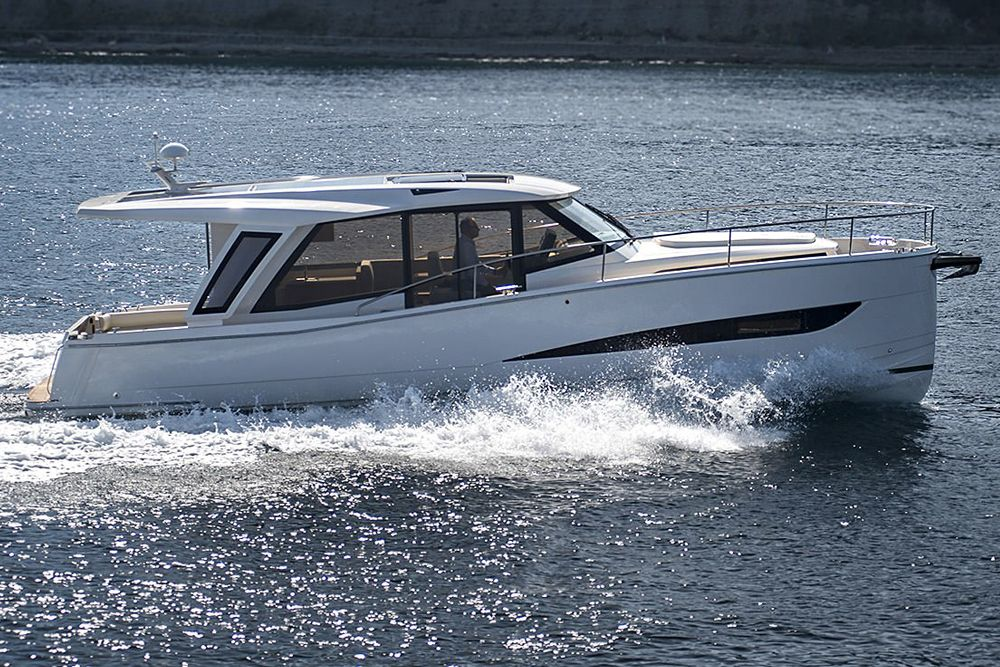

B-Atlas Boat Guide · GRNL-39
Greenline 39 Diesel / Hybrid / Electric Sedan
From 2017
The Greenline 39 is a two-cabin Slovenian sedan cruiser using Greenline’s efficiency-focused hull, roof-integrated solar power and a single shaft line. It is offered with diesel, hybrid and electric propulsion configurations and emphasizes low-speed efficiency and generator-reduced cruising comfort.

- Length
- 39.42 ft
- Beam
- 12.33 ft
- Draft
- 2.92 ft
- Hull behaviour
- Semi-Displacement
- Fuel
- Diesel
- Propulsion
- Shaft
- Engine configuration
- Single shaft drive; diesel, hybrid and electric options documented
- Boat family
- Trawler
- Construction
- Fiberglass
Best for
- Couples seeking efficient extended coastal or inland cruising
- Owners who value solar-supported electrical autonomy
- Buyers comfortable with modern energy-management systems
Trade-offs
- Advanced electrical systems require knowledgeable maintenance
- Hybrid/electric range and charging capability depend heavily on configuration
- Single-engine propulsion lacks the redundancy of twins
Known concerns
- No model-specific concern has been promoted to B-Atlas’s evidence threshold. This does not mean the model has no age-, condition- or hull-specific risks.
Inspection focus
- Verify diesel, hybrid or electric propulsion and battery specification
- Inspect battery-management, inverter, charger and solar systems
- Inspect shaft, rudder, propeller and stern gear
- Inspect glazing, doors and roof openings for leakage
- Confirm propulsion service history and software/control updates
Continue researching
Related boat models
Mainship 350 Trawler
39.75 ft · Semi-Displacement
Mainship 390 Trawler
39.75 ft · Semi-Displacement
CHB 40 Double Cabin Double Cabin
40 ft · Semi-Displacement
Cape Dory 40 Explorer Explorer
40 ft · Planing / Modified-V
DeFever 40 Offshore Cruiser Offshore Cruiser
40 ft · Semi-Displacement
Island Gypsy 40 Classic Classic
40 ft · Semi-Displacement
About this record
B-Atlas preserves uncertainty: missing information remains unknown rather than being treated as a negative. Specifications and guidance describe the model record; individual boats can differ by year, equipment, refit and condition.